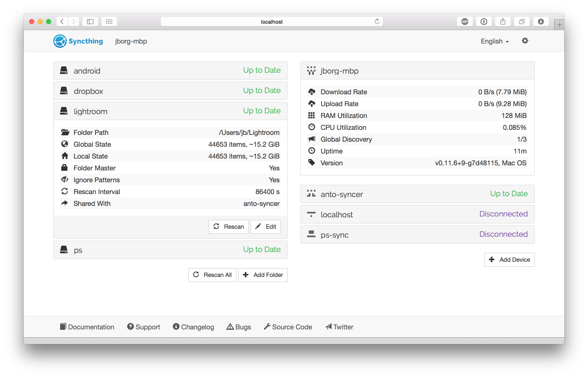

An intro to the GUI
資料夾檢視
The left side of the screen shows the ID and current state of all configured folders. Clicking the folder name makes that section expand to show more detailed folder information, and buttons for editing the configuration or forcing a rescan.

A folder can be in any one of these states:
- 未知
while the GUI is loading.
- 未共享
when you have not shared this folder,
- Stopped
when the folder has experienced an error,
- Scanning
while Syncthing is looking in the folder for local changes,
- Up to Date
when the folder is in sync with the rest of the cluster,
- Syncing
when this device is downloading changes from the network.
Among the folder details, you can see the current "Global State" and "Local State" summaries, as well as the amount of "Out of Sync" data if the the folder state is not up to date.
- Global State
indicates how much data the fully up to date folder contains - this is basically the sum of the newest versions of all files from all connected devices. This is the size of the folder on your computer when it is fully in sync with the cluster.
- Local State
shows how much data the folder actually contains right now. This can be more or less than the global state, if the folder is currently synchronizing with other devices.
- Out of Sync
shows how much data needs to be synchronized from other devices. Note that this is the sum of all out of sync files - if you already have parts of such a file, or an older version of the file, less data than this will need to be transferred over the network.
Device View
The right side of the screen shows the overall state of all configured devices. The local device (your computer) is always at the top, with remote devices in alphabetical order below. For each device you see its current state and, when expanded, more detailed information. All transfer rates ("Download Rate" and "Upload Rate") are from the perspective of your computer, even those shown for remote devices. The rates for your local device is the sum of those for the remote devices.